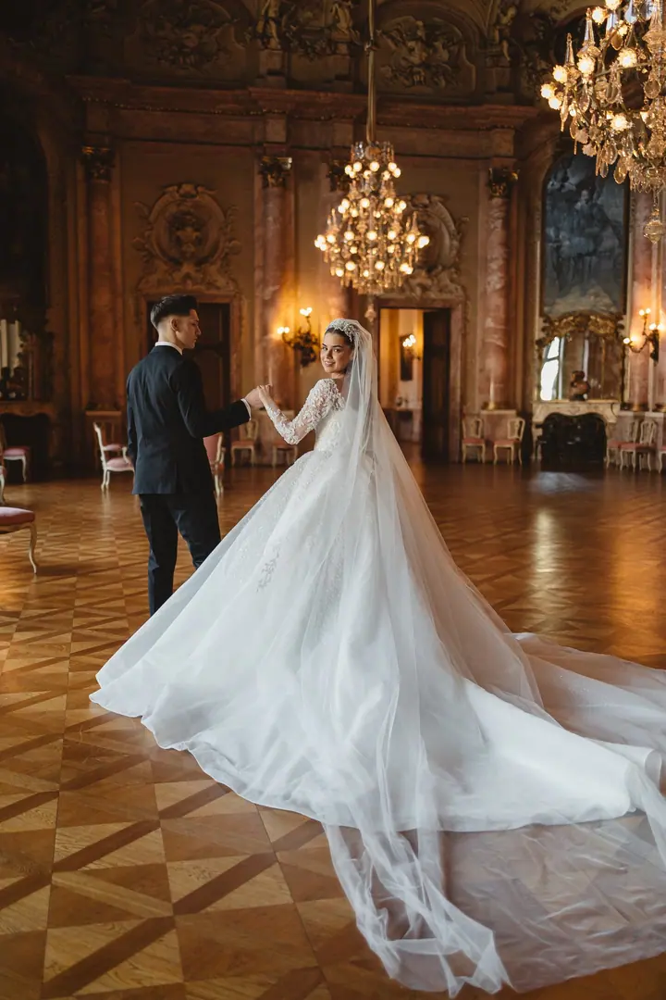

Svatební fotografie
Fotíme svatby klasicky, lifestylově i dokumentárně, s důrazem na opravdové emoce. Nehrajeme si na kopie z Pinterestu ani na šablony, zachycujeme to, co se skutečně stalo.

Svatební fotograf
Jmenuji se Sergio Baloha a spolu s Mariannou fotíme svatby z Prahy po celé Evropě. Hledáme upřímné emoce, nestavěné chvíle a nadčasovou krásu, která vychází z jednoduchosti.
Zeptat se na termín
Fotíme svatby klasicky, lifestylově i dokumentárně, s důrazem na opravdové emoce. Nehrajeme si na kopie z Pinterestu ani na šablony, zachycujeme to, co se skutečně stalo.
Sídlíme v Praze, ale za vámi rádi přijedeme kamkoli v Evropě i ve světě. Svatby jsme fotili už ve 13 zemích.
Jmenuji se Sergio a svatby fotím spolu s Mariannou. Máme za sebou 11 let, přes 600 svateb a 13 zemí, ale u fotografie nám nikdy nešlo o čísla. Jde nám o váš příběh, který je jen váš.
Neděláme kopie z Pinterestu a nedržíme se šablon. Chceme zachytit syrové, upřímné a dechberoucí chvíle, které se opravdu staly, ne ty naaranžované. Náš styl je klasika, lifestyle a dokumentární vyprávění s opravdovými emocemi.
Za ty roky víme, jak si poradit s jakýmkoli světlem, počasím i nečekanou situací. Na svatbu ale nejdeme jen pracovat. Nejdřív se s vámi chceme poznat, aby vaše galerie působila jako vy. Pokud i vy dáváte přednost upřímnosti před pózami a jednoduchosti před trendy, rozumíme si.
Vyplňte krátký formulář s datem, typem akce a pár slovy o vaší svatbě. Ozveme se vám s dalšími informacemi.
Než přijde váš den, chceme vás poznat. Díky tomu bude galerie odpovídat tomu, jací opravdu jste.
Fotíme nenápadně a dokumentárně, bez šablon a strojených póz. Zaměřujeme se na emoce a to, co se skutečně děje.
Dostanete ucelený příběh celého dne, ne jen pár vybraných záběrů. Takové celé svatební série ukazujeme i na webu.
Ano. Sídlíme v Praze, ale fotíme po celé Evropské unii i ve světě. Svatby jsme už fotili ve 13 zemích.
Domluvíme se česky, slovensky, anglicky, ukrajinsky i rusky.
Klasický, lifestylový a dokumentární, hlavně s opravdovými emocemi. Nekopírujeme trendy a nefotíme podle šablon.
Určitě. Na webu ukazujeme celé svatební série, abyste viděli, jak vypadá kompletní galerie z jednoho dne.